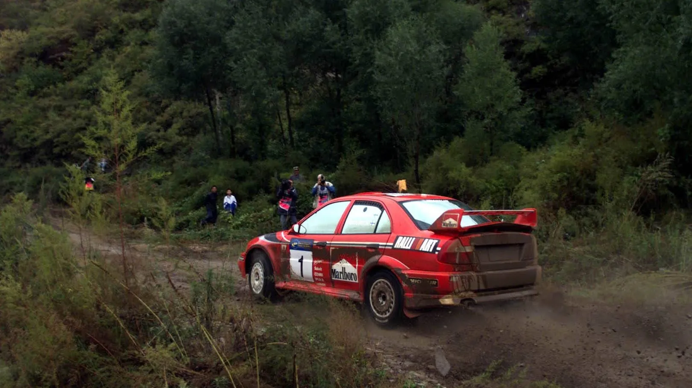
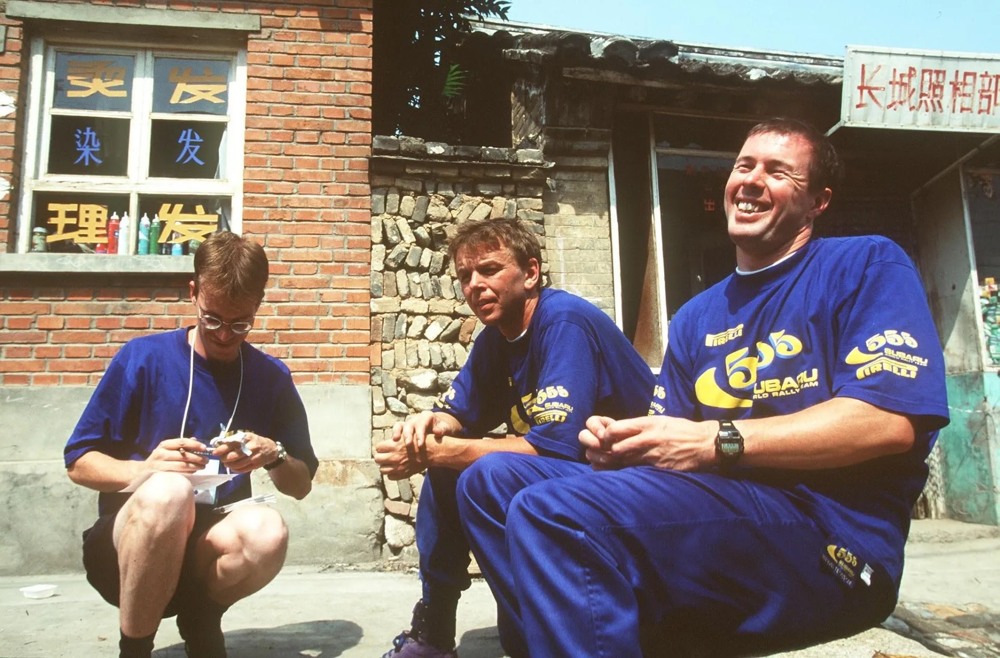
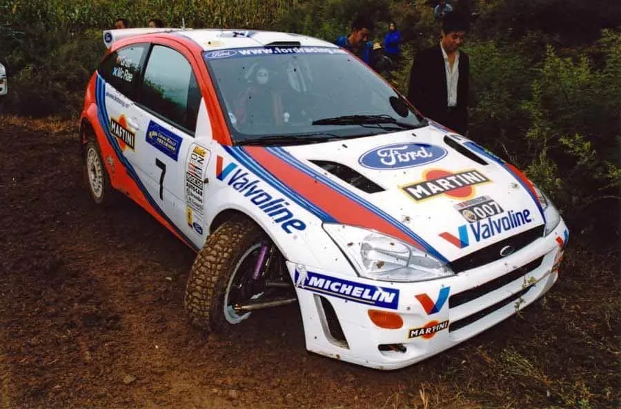
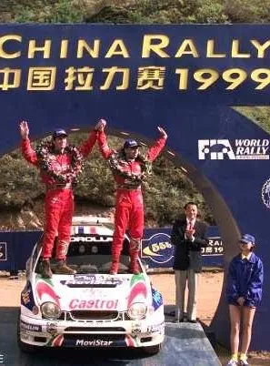
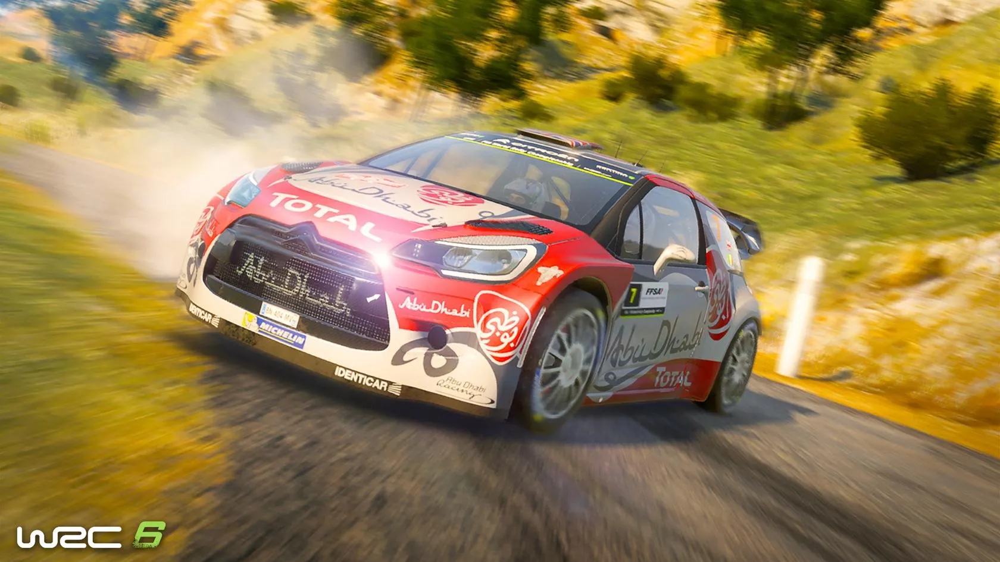
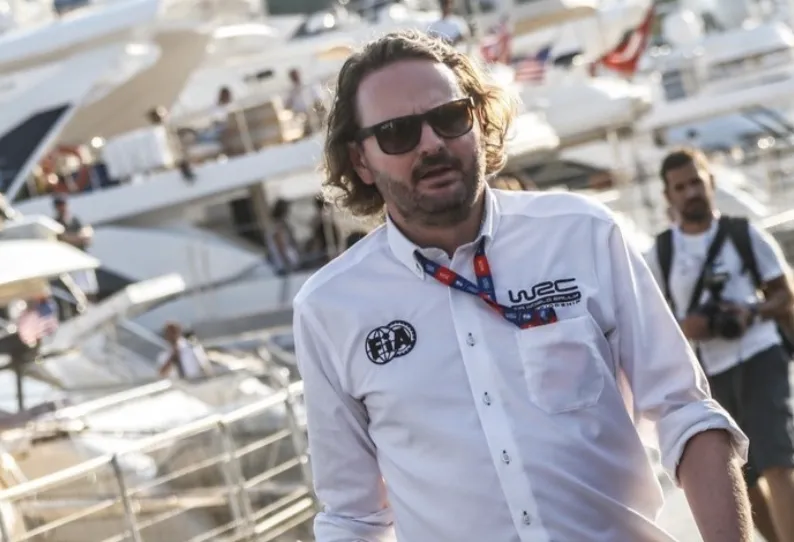

Rally China's bizarre story and what we can learn from it
Rally China has long harboured ambitions to be a staple of the World Rally Championship, yet its track record is anything but perfect. The 1999 rally left many questioning its viability, and the 2016 cancellation only solidified doubts about its organisation. So what’s the future of the event, and what can we draw from it?
Our story begins in the late 90s, when the country wished to host a rally in the World Rally Championship. The event organisers first held two gravel rallies in the Asia Pacific Rally Championship in 1997 and 1998. The two rallies were based in the Huairou district of China, just north of the capital city of Beijing, and used roads similar to the ones found in Indonesia. The rally used a mix of both fast and technical, narrow stages. The two APRC events were sponsored by British American Tobacco, and as a result, Subaru sent out their WRC cars in each of them, with Colin McRae, Pierro Liatti and Kenneth Eriksson competing in both events.

The Subaru Team competed in the first edition of the Chinese Rally.
Picture from Prodrive
For 1999, the rally joined the WRC calendar at the expense of Indonesia, who had already seen their 1998 rally cancelled due to civil unrest. The rally itself featured stages that were also used in the two unofficial candidate events from 1997 and 1998. In fact, the itinerary was almost identical to the one used in 1998. Heading into the week of the rally, the crews had their recce in dry and sunny weather, but torrential rain on the next day forced the organisers to cancel the Ceremonial Start that was set to be at the Great Wall of China, and also cancel the longest stage of Friday as well.
The bad weather concerned both teams and drivers, as it would be difficult for the medical helicopter to fly if such bad weather continued, meaning that a response to a heavy accident would be slower. There were talks of drivers boycotting the event due to the organisers seeming unfazed at the fact that the medical helicopters could potentially not reach the stages, with Toyota’s Carlos Sainz going as far as saying that the rally had no place in the championship.
FIA’s President of the Rally Commission Shekhar Mehta’s statement that rallies wouldn’t be able to be held if there were this many concerns any time the helicopters wouldn’t be able to fly, definitely didn’t help. Thankfully, the weather eased up by the time SS1 rolled around, and the rally went on as normal.

Rally China was less than ideal for the M-Sport team.
Picture from Stuart Bowes
Ford’s Colin McRae was the pre-event favourite, having won the past two editions of the rally, and also having the most experience in this event out of his competitors. However both he and teammate Thomas Radstrom would be out of the rally on the first test of the event.
McRae hit a concrete culvert and broke his Ford’s suspension, and incredibly, Radstrom would hit the same culvert, and also break his suspension. That one culvert took out the entire Ford team, much to Malcolm Wilson’s dismay. The torrential rain had made the roads extremely rough, with Subaru’s Juha Kankkunen saying it was even worse than the Acropolis Rally in Greece.
The rally kept giving people problems. Early leader Tommi Makinen hit a tree and spun, dropping to 3rd, before eventually retiring on SS16 with a broken suspension. Freddy Loix had already crashed out of the rally on Friday. Richard Burns would end Friday in the lead of the rally, ahead of Toyota’s Didier Auriol. On Saturday, Auriol went on the attack, eventually passing Burns for first on Stage 14. The Frenchman would eventually win the rally, becoming the first driver to win a WRC event in China.

Auriol became the first and only winner of the Chinese Rally in the WRC.
After the rally, despite no real safety issues in the rally proper, many amongst the service park were sceptical about the rally returning for 2000, with Carlos Sainz answering that he’d be happy when he was on the plane back home at a question about the 2000 edition of the event.
In the end, the event wouldn’t return for the 2000 season, as the organisers ran out of money. An appetite for a Rally in China would remain however, with the event featuring in the 2008 IRC calendar.
But the real wish was for China to return to the WRC calendar. In 2015, a candidate event was arranged in the same region as the WRC rally in 1999, in the Huairou region near the capital city in Beijing. A change however would be that the surface would now be tarmac, not gravel, with the event even using some stages from the 90s, albeit now paved. The candidate event was part of the Chinese Rally Championship, with the rally being 179 kilometres, spanning 2 days and 9 stages. The stages resembled those in Corsica, with very twisty mountain roads.
The rally also had roads that were out of concrete, not tarmac, similar to the ones from the Baumholder military region in Germany, but still twisty and very abrasive. The rally attracted a decent entry list with many locals, as well as foreign drivers, like ex WRC drivers Chris Atkinson and Alister McRae, as well as Mark Higgins, Nial McShea and Sander Pärn. Atkinson won the rally, driving a Volkswagen Golf car made by Prodrive to be used in the CRC, with Higgins and McRae rounding up the podium.
The event gathered mixed results, with some serious organisational failures, as there were instances of drivers encountering mopeds on the stages, sometimes even driving in the opposite direction.
Review of the 2015 WRC candidate event. In it you can see the roads used in the rally, as well as Atkinson's and Prodrive's experience.
Despite those issues, the event was included in the 2016 WRC calendar, much to the teams’ annoyance, as they had been vocal regarding the calendar’s expansion to 14 rallies. However, the 2016 calendar would end up only featuring 13 rallies anyway.
The event was cancelled a month before it was supposed to be ran, despite itinerary and maps for it being released. The cancellation came as a result of heavy damage caused to the roads of the region after torrential rain and flooding. With the cancellation of the event being this close to the date of the rally, the teams had already shipped out parts in China, meaning they were losing money on a rally that in the end wouldn’t happen.
That’s why, despite the cancellation, the teams wanted the rally to go ahead on the roads that were undamaged, and be treated as another candidate event, if the organisers had aspirations for it to be included in the 2017 calendar. Journalists from China downplayed the magnitude of the damage on the roads from the rain and floods, mentioning that similarly to 2000, the event didn’t have the funds necessary to run in September, and that it would’ve been cancelled anyway.
The proposed candidate event never happened, and the event was promptly absent on the 2017 WRC calendar. That however did not stop the rumours of the event returning in the future, with then promoter boss Oliver Cielsa saying that Rally China was still in the running to secure a slot in the 2018 calendar. That again did not materialise.

The only WRC cars that visited China in 2016 were the ones from the WRC6 videogame.
So, one pandemic later, that brings us on today. After Saudi Arabia’s inclusion to the WRC calendar for 2025, rumours emerged yet again about a potential return in China. WRC promoter head Peter Thul visited China and met with key officials of the Chinese Automobile Federation in Beijing, as well as representatives of other regions of China to talk about the possibility of a rally being held in the country. WRC event Director Simon Larkin described the prospect of a return in China as “the next strategic target” for the championship, on rallit.fi.

So will China return to the WRC? Time will tell. If I had to put my money on it, my answer would be no, atleast without serious government involvement, something that seems unlikely.
Adding a rally in the WRC for sociopolitical or monetary reasons, is something that will eventually come to haunt the FIA and the people of the WRC, as a potential Rally China 2016 could be right around the corner no matter the assurances given beforehand. If something seems like a deal made in heaven, then it’s likely to be one made in hell.


Comments